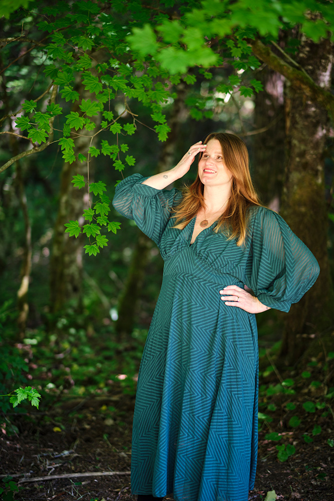

Chelsea Hanawalt
Welcome, I'm Chelsea!

I am an educator, applied theatre facilitator, and drama therapy coach. I am committed to fostering self-care, self-expression, and imagination through play, storytelling, and the expressive arts.
My work fosters brave and dynamic spaces where individuals and communities can connect, learn and grow through creative engagement.
My work fosters brave and dynamic spaces where individuals and communities can connect, learn and grow through creative engagement.

I Believe Theatre is:
Community Building:
Theatre helps to foster collaboration, empathy, and connection. It provides a space for people of all backgrounds, abilities, and identities to express themselves. It’s often a refuge for those who feel out of place elsewhere. Folks have been storytelling around a fire forever, theatre brings people together in a ritualistic, grounded and timeless way.
Healing:
Theatre helps us tap into our imagination and wonder. It invites us to step into the “play space” and try on different versions of ourselves, maybe a version that empowers us to live the life we have always wanted. Drama helps us express our emotions boldly through the lens of a character, distancing ourselves from experiences that could be too hard. It provides a buffer, a way to get a different perspective on our lives. We can use plays, poetry, art and song to express our feelings when we can’t find the right words. In a loneliness epidemic, theatre has the unique ability to build deep and lasting bonds with others. Just ask any theatre kid, they will confirm this!
Catalyst for Change:
“The theater itself is not revolutionary: it is a rehearsal for the revolution” Augusto Boal.
Theatre can inspire change and shift peoples preconceived ideas and biases. Through the work of Augusto Boal’s, Theatre of the Oppressed (TO), I learned about forum theatre. A short play that presents a social injustice or injustices on the stage. The spectators turn into “spect-actors” and have the power to go on the stage, play a character and try out different ways to change the outcome. A “rehearsal for the revolution.” Applied theatre conventions like process dramas, theatre for education and playbuilding, provide a way to embody the change we want to see in the world. To examine our world through characters and stories. To step into another's shoes, try on different perspectives, to build empathy and understanding.
"Adri is so patient and thoughtful. She helped me highlight my work in a way that makes me so proud of my unique approach to design."
Collette Noll, Collete Noll Interior Design
"Being an e-commerce entrepreneur isn't easy, and Adri gave my products the design direction they needed to become bestsellers."
Sofia Pazari, Sofia Pazari Home Goods